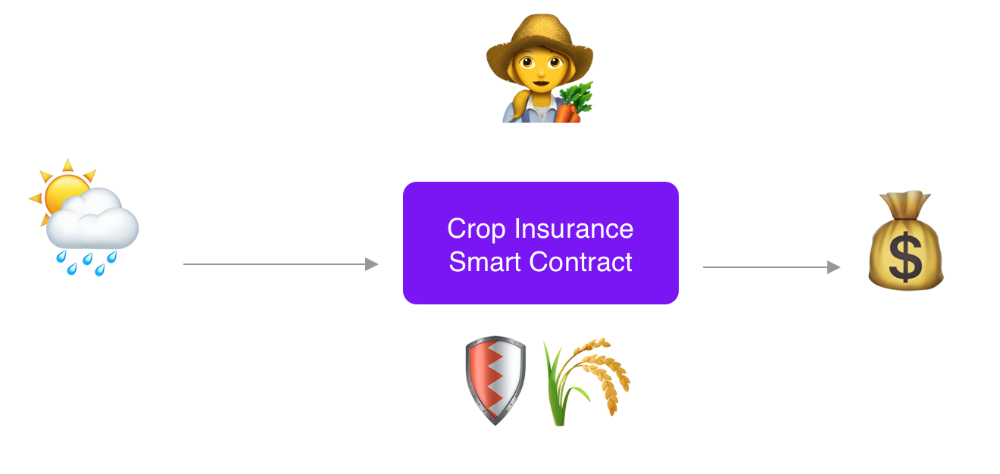
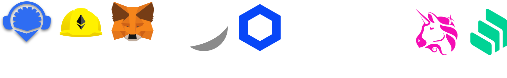
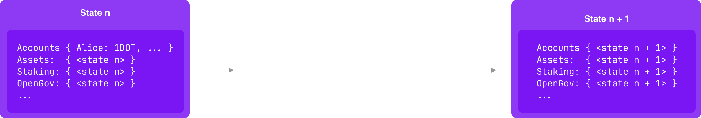
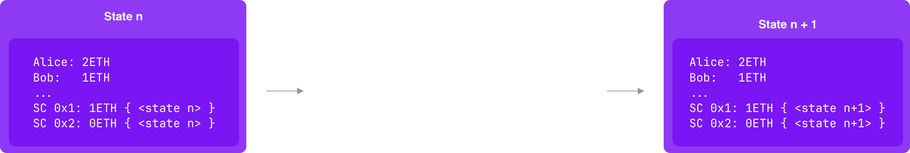
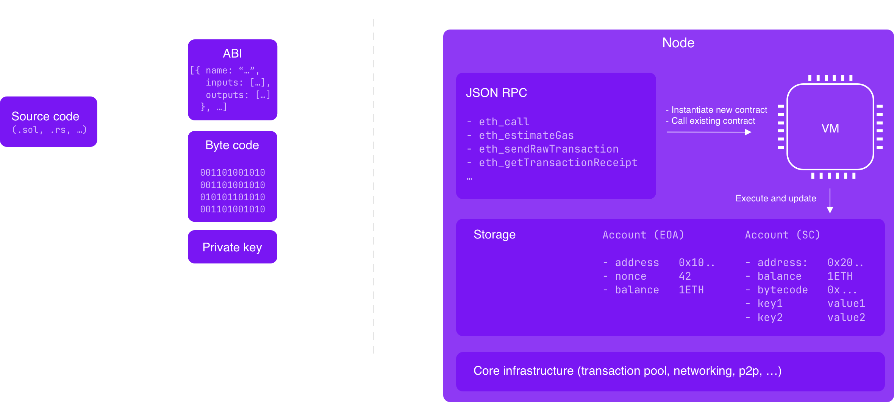

<!DOCTYPE html>
<html lang="en">

<head>
  <meta charset="utf-8" />
  <meta name="viewport" content="width=device-width, initial-scale=1.0, maximum-scale=1.0, user-scalable=no" />

  <title>Smart contracts fundamentals</title>
  <link rel="icon" href="./../../assets/favicon.svg" />
  <link rel="shortcut icon" href="./../../assets/favicon.png" />
  <link rel="stylesheet" href="./../../dist/reset.css" />
  <link rel="stylesheet" href="./../../dist/reveal.css" />
  <link rel="stylesheet" href="./../.././assets/styles/PBA-theme.css" id="theme" />
  <link rel="stylesheet" href="./../../css/highlight/shades-of-purple.css" />

  <link rel="stylesheet" href="./../.././assets/styles/custom-classes.css" />

</head>

<body class="site">
  <header class="site-header">
    <!-- This logo is a link only on the watching server, not the production build -->
    <a href="">
      
    </a>
  </header>
  <main class="reveal">
    <article class="slides">
      <section  data-markdown><script type="text/template">

<style>
    code {
        overflow: hidden!important;
        width: 120%!important;
    }
</style>

## Smart contracts fundamentals

<aside class="notes"><p>The goal of the lecture is to define the basic definition of what a SC is
and explain the advantage and trade off of a smart contract chain</p>
</aside></script></section><section ><section data-markdown><script type="text/template">
# WHY?

<aside class="notes"><ul>
<li>Always start with the why!</li>
<li>2 things to answers here:<ul>
<li>One, The benefits of smart contracts as a technology: Smart Contracts are a huge improvement over traditional legal contracts, that are slow, expensive, and error-prone.
With smart contracts, you can automate the execution of agreements, enforce them automatically, and remove the need for intermediaries. E.g crop insurance.</li>
<li>Two, For the Polkadot ecosystem, it&#39;s important to embrace a technology that is widely adopted by the Ethereum
community, so that we can leverage the tooling, and easily onramp existing dapps, but also users and developers.</li>
</ul>
</li>
</ul>
</aside></script></section><section data-markdown><script type="text/template">
## Crop Insurance contract



<aside class="notes"><p>See <a href="https://www.owlexplains.com/en/podcast/ep-8-how-lemonade-is-using-smart-contracts-to-revolutionize-crop-insurance/">https://www.owlexplains.com/en/podcast/ep-8-how-lemonade-is-using-smart-contracts-to-revolutionize-crop-insurance/</a></p>
</aside></script></section><section data-markdown><script type="text/template">
## Ecosystem


</script></section></section><section ><section data-markdown><script type="text/template">
## Blockchain


<aside class="notes"><p>Before defining what a smart contract (SC) is, we need to understand the environment in which it operates: the blockchain.
We won’t dive deep into what a blockchain is—that will be covered in detail during the PBA. For now, it&#39;s enough to define a blockchain as:
A distributed system where all participants (nodes) execute a common set of transactions contained in a block.
These transactions are processed using a state transition function, which updates the blockchain’s state from block n to block n+1.
The state transition function is defined by the protocol itself. Additionally, consensus mechanisms determine who gets to author the next block.</p>
<p>Since all nodes execute the same transactions with the same rules, they all derive the same resulting state. This ensures that block n+1 is identical across all honest nodes in the network.</p>
</aside></script></section><section data-markdown><script type="text/template">
### Bitcoin


<aside class="notes"><p>In Bitcoin, the state transition function primarily processes transactions, which are mostly transfer transactions.
Accounts submit transactions, transactions are gossiped over the network, and will eventually be included in a block.
The state transition function, will validate the transactions, and update the state of the ledger with these instructions ed ledger by moving ownership of coins from one address to</p>
</aside></script></section><section data-markdown><script type="text/template">
### Polkadot



<aside class="notes"><p>Unlike Bitcoin, Polkadot&#39;s state transition function is highly flexible and programmable.
Blockchains built with Substrate run a WebAssembly (Wasm) runtime, which defines how the blockchain&#39;s state is updated.
This runtime is built using Rust modules, called pallets, each defining specific transaction types.
Because this state transition function is written in a Turing-complete language like Rust, it can execute complex logic beyond simple transfers.</p>
<p>Different pallets allow developers to introduce specialized logic into their blockchain:
Assets &amp; NFT pallets → Define fungible and non-fungible tokens and their operations.
Democracy pallet → Enables on-chain governance, allowing proposals to be submitted, voted on, and enacted when approved.
Other pallets can introduce staking mechanisms, cross-chain messaging, DAOs, and more.</p>
<p>Polkadot&#39;s state transition function can execute any business logic defined in the runtime.
However, the runtime itself is not permissionless—it must be explicitly defined and deployed by the chain’s developers or governance
To allow arbitrary logic execution, a Smart Contracts module must be embedded in the runtime.
Otherwise, only predefined transaction types (e.g., assets, governance, staking) can be executed.</p>
</aside></script></section><section data-markdown><script type="text/template">
### Smart contracts chain



<aside class="notes"><p>Now, we can finally define what a smart contract is.
A smart contract is a special type of account that is not controlled by a keypair, but instead by the code it defines.
A smart contract blockchain allows users to do essentially 3 things:</p>
<ul>
<li>Transfer value between accounts.</li>
<li>Deploy contracts on-chain.</li>
<li>Call these contracts to execute their logic.</li>
</ul>
<p>You can think of smart contracts as dormant programs stored on the blockchain at a specific address.
These programs remain inactive until they are triggered by a transaction.</p>
<p>So you can think of a contract as &quot;code on chain&quot;. One important aspect of smart contracts is that they are immutable. The code that defines a contract cannot be changed once it is deployed. This ensures that the contract’s behavior remains predictable and that users can trust the contract to execute</p>
<p>Smart contracts are executed when:</p>
<ul>
<li>A regular account submits a call transaction to interact with them.</li>
<li>Because smart contracts are highly composable, they can also interact with each other to execute complex workflows. This means that in addition to being called by regular accounts, they can also be triggered by other smart contracts, enabling powerful on-chain interoperability.</li>
</ul>
<p>For example, the USDC smart contract, is an ERC-20 token that maintains a mapping of balances, associating each user’s address with the amount of USDC they hold.
When a user transfers USDC, the contract updates the sender’s balance by subtracting the amount, adds the same amount to the recipient’s balance, and stores the new state on-chain to ensure all nodes remain synchronized</p>
</aside></script></section></section><section  data-markdown><script type="text/template">
## Bytecode & Virtual Machines



<aside class="notes"><p>When we deploy a smart contract on-chain, we first compile it into bytecode, which can be executed by a virtual machine.
Different smart contract blockchains use different bytecode formats.
For example:</p>
<ul>
<li>On Ethereum contracts are compiled into EVM bytecode.</li>
<li>On Solana, programs are compiled into BPF bytecode.</li>
<li>On Polkadot Hub as we will explore later, we use PolkaVM bytecode</li>
</ul>
<p>The state transition function of the blockchain runs the Virtual Machine to execute the instructions in this compiled bytecode, and update the state of the chain.</p>
</aside></script></section><section  data-markdown><script type="text/template">
### A simple Example

```solidity[4-9|11-15|18-24]
// SPDX-License-Identifier: MIT
pragma solidity ^0.8.0;

contract PiggyBank {
    address public owner;

    constructor() {
        owner = msg.sender;
    }

    function getBalance() public view returns (uint256) {
      return address(this).balance;
    }

    function deposit() public payable {}


    function withdraw(uint256 withdrawAmount) public {
        require(msg.sender == owner, "You are not the owner");
        require(address(this).balance >= withdrawAmount, "Insufficient balance");

        (bool success, ) = payable(msg.sender).call{value: withdrawAmount}("");
        require(success, "Transfer failed");
    }
}
```

<aside class="notes"><p>Developers don’t typically write bytecode by hand. Instead, they write smart contracts in high-level languages, which are then compiled into bytecode. On EVM-compatible chains, the most widely used language is Solidity, that is compiled to bytecode using the <code>solc</code> compiler. Let&#39;s go through a simple <code>PiggyBank</code> solidity contract to illustrate it.</p>
<ul>
<li>When a contract is deployed, the constructor code is executed</li>
<li>The owner can call the deposit function to deposit some balance</li>
<li>The view function <code>GetBalance</code> is a &#39;readonly&#39; function that can be queried through a JSON-RPC call</li>
<li>If you send ETH directly to the contract (without calling a function like deposit), it will fail unless the contract has a receive or fallback function.
Without one of these, any direct transfer (e.g., sendTransaction from a wallet) will be rejected with an error.</li>
</ul>
</aside></script></section><section ><section data-markdown><script type="text/template">
## Core Features of Smart Contracts
</script></section><section data-markdown><script type="text/template">
### Gas

<pba-flex center>


```solidity
    while (true) {
        // ...
        // This loop will consume all gas and revert
    }
}
```

<!-- .element: class="fragment" -->
</pba-flex>

<aside class="notes"><p>You might be wondering—if a smart contract can execute any arbitrary logic, what prevents it from defining an infinite loop that could stall the entire blockchain?
To prevent this and to protect the network from spam, virtual machines are metered. Every instruction executed by the VM has an associated gas cost, which represents the computational resources required to process it.</p>
<p>When you submit a transaction or when a contract calls another contract, you must specify the maximum amount of gas you’re willing to pay for execution. The contract’s code will either:</p>
<ul>
<li>Run to completion if there is enough gas.</li>
<li>Run out of gas and revert, undoing any changes made to the contract storage, but you will still pay for the gas that was consumed before the failure.</li>
</ul>
<p>Additionally, the blockchain itself imposes limits on gas usage:
It defines a block gas limit, which sets the maximum amount of gas that can be used across all transactions in a single block.
It also defines a gas price, which determines how much fees will be paid for a given amount of gas.
blockchains usually adjust gas prices dynamically based on network demand, ensuring fees reflect current congestion levels
This system ensures that no contract can consume unlimited resources, execution remains bounded, and transaction fees dynamically adjust based on network demand.</p>
</aside></script></section><section data-markdown><script type="text/template">
#### Metered calls in EVM

<diagram class="mermaid">
%%{init: {'theme': 'dark', 'themeVariables': { 'darkMode': true }}}%%
flowchart LR
    Start --> FetchNextOpcode[Fetch next opcode]
    FetchNextOpcode --> LookupCost[Look up opcode cost]
    LookupCost --> CheckGas{Enough gas?}
    CheckGas -- No --> OutOfGas[Throw Out of Gas]
    CheckGas -- Yes --> DeductGas[Deduct gas]
    DeductGas --> ExecuteOpcode[Execute Opcode]
    ExecuteOpcode --> FetchNextOpcode
</diagram>

<aside class="notes"><ul>
<li>In pallet-revive the graph is slightly different, regular opcode are not metered but the VM injects gas metering
instructions per basic block</li>
<li>Checks before each opcode to make sure gas can be paid</li>
<li>Safe: prevents unpaid work from being done</li>
<li>Deterministic: results are unambiguous</li>
<li>Very inefficient: lots of branching and extra work</li>
</ul>
</aside></script></section><section data-markdown><script type="text/template">
#### Weighted calls in substrate

```rust[1-8]
#[pallet::weight(T::WeightInfo::set_metadata(name.len(), symbol.len()))]
pub fn set_metadata(
    origin: OriginFor<T>,
    id: T::AssetIdParameter,
    name: Vec<u8>,
    symbol: Vec<u8>,
    decimals: u8,
) -> DispatchResult {
    let origin = ensure_signed(origin)?;
    let id: T::AssetId = id.into();
    Self::do_set_metadata(id, &origin, name, symbol, decimals)
}
```

<aside class="notes"><p>In Substrate, each call defines a pre-dispatch weight, which can depend on the input parameters. Accounts must pay the estimated execution fee upfront, and any excess is refunded after execution.</p>
</aside></script></section><section data-markdown><script type="text/template">
#### Metered VM Execution vs. Weighted Calls in Substrate

| Feature             | EVM                            | Substrate                                |
| ------------------- | ------------------------------ | ---------------------------------------- |
| **Execution Model** | Metered                        | Pre-weighted calls                       |
| **Cost**            | Dynamic                        | Static, determined pre-dispatch          |
| **Performance**     | Runtime overhead               | Optimized execution                      |
| **Flexibility**     | Supports arbitrary computation | Requires (benchmnarked) weights per call |

<aside class="notes"><p>In VM-based blockchains, execution is metered using gas.
This makes execution flexible but introduces runtime overhead due to dynamic metering.</p>
<p>Contract execution performance is <strong>less predictable</strong>, as total costs depend on actual execution flow.
Wallet usually need to dry-run the execution to define how much gas is required for the execution.</p>
<p>In Substrate-based chains, execution is handled differently</p>
<ul>
<li>Instead of metering each instruction at runtime, calls have predefined weights based on computational complexity.</li>
<li>This approach enables more efficient execution compared to metered VM, as the chain doesn’t need to meter each instruction dynamically, reducing runtime overhead.</li>
</ul>
</aside></script></section></section><section ><section data-markdown><script type="text/template">
### Composability


<aside class="notes"><p>Smart contracts are highly composable, meaning they can interact with each other to execute complex workflows. A contract call is always initiated by an Externally Owned Account (EOA) through a transaction.</p>
</aside></script></section><section data-markdown><script type="text/template">
### Call types

- Normal Call: Contract A calls Contract B
- Static Call: Contract A reads data from Contract B
- Delegate Call: Contract A executes Contract B in its execution context

<aside class="notes"><p>Methods for contract interaction include:</p>
<ul>
<li><p><strong>Normal Call</strong>:</p>
<ul>
<li>Contract A calls Contract B.</li>
<li>Contract B is pushed to the call stack, executes, potentially updates its state, and may call other contracts.</li>
<li>Contract B returns control to Contract A along with the result and status (reverted or successful).
An example for this would be a contract that calls another contract to transfer tokens.</li>
</ul>
</li>
<li><p><strong>Static Call</strong>:</p>
<ul>
<li>Contract A calls Contract B.</li>
<li>Contract B executes but cannot make state changes.
An example for this would be a contract that reads data from another contract, e.g a price feed.</li>
</ul>
</li>
<li><p><strong>Delegate Call</strong>:</p>
<ul>
<li>Contract A calls Contract B in its execution context.</li>
<li>Contract B can read and write to A&#39;s storage, akin to a library executing within A.
An example for this would be to use a Math library to perform calculations.</li>
</ul>
</li>
</ul>
<p>A good mental model is to think of smart contracts as the API layer of web3. Your contract can tap into other contracts
to access their functionality, read and write data and execute complex workflows. A good example of that are flash loans
on the Aave protocol, where a contract can borrow funds from the protocol, execute a series of transactions and repay
the loan in the same transaction.</p>
</aside></script></section></section><section ><section data-markdown><script type="text/template">
### Call types


</script></section><section data-markdown><script type="text/template">
### Call types


</script></section><section data-markdown><script type="text/template">
### Call types


</script></section><section data-markdown><script type="text/template">
### Precompiled Contracts


<aside class="notes"><p>Another important feature of smart contracts is the ability to interact with precompiled contracts.
A precompile contract is a contract whose code is defined in the client software directly.
On Ethereum, that has a slow VM, it&#39;s used to perform computation intensive operations like elliptic curve cryptography,
outside the EVM, to improve performance.
In Substrate, a Smart-Contract pallet, can leverage this to expose other features of the runtime (like staking, xcm, governance, assets) to smart contracts</p>
</aside></script></section><section data-markdown><script type="text/template">
### Immutability


<aside class="notes"><p>Contracts are immutable by design, however in some circumstances, you might want to upgrade to fix a bug or add or
improve existing features. There are several patterns to achieve this, one of the most common is the Proxy pattern.
Essentially, the proxy pattern involves creating a proxy contract that delegates calls to an implementation contract.
When you want to upgrade the contract, you deploy a new implementation contract and update the proxy to point to the new implementation.</p>
</aside></script></section><section data-markdown><script type="text/template">
#### Smart Contract vs. Substrate Upgrades

|                   | Smart Contracts                       | Substrate                              |
| ----------------- | ------------------------------------- | -------------------------------------- |
| **Upgradability** | Immutable (requires proxy)            | Yes through Runtime Upgrade            |
| **Governance**    | Contract owner / DAO                  | Sudo / On-chain OpenGov                |
| **Overhead**      | Gas costs for proxy & state migration | No gas cost (protocol-level execution) |
</script></section></section><section ><section data-markdown><script type="text/template">
## Security


<aside class="notes"><p>Permissionless Deployment is Risky</p>
<p>Anyone can deploy a smart contract, but if &quot;code is law,&quot; any bug or vulnerability can be exploited.
Attackers actively search for vulnerabilities in deployed contracts.
Even small logic errors or gas inefficiencies can be exploited for financial gain.</p>
<ul>
<li>Security audits are essential before deploying contracts that manage funds.</li>
<li>Use battle-tested smart contract libraries (e.g., OpenZeppelin).</li>
<li>Follow established design patterns to avoid common vulnerabilities (e.g., reentrancy).</li>
<li>Implement proper access control to prevent unauthorized actions.</li>
</ul>
</aside></script></section><section data-markdown><script type="text/template">
### Reentrency bug

```solidity[1-2|4-12]
contract Vulnerable {
    mapping(address => uint256) public balances;

    function withdraw() external {
        uint256 amount = balanceOf[msg.sender];

        //❗ Sends ETH before updating balance
        (bool success, ) = msg.sender.call.value(amount)("");
        require(success, "Transfer failed.");

        //❗ Balance Update after Transfer - Allows Reentrancy!
        balances[msg.sender] = 0;
    }
}
```

<aside class="notes"><p>see <a href="https://blog.chain.link/reentrancy-attacks-and-the-dao-hack/">https://blog.chain.link/reentrancy-attacks-and-the-dao-hack/</a></p>
</aside></script></section><section data-markdown><script type="text/template">
### Activity: Reproduce the DAO hack

> Deploy and execute the DAO hack on a local chain
</script></section></section><section ><section data-markdown><script type="text/template">
## JSON-RPC

- JSON-RPC is a **remote procedure call (RPC) protocol** using JSON for encoding requests and responses.
- It allows **external applications, wallets, and scripts** to interact with blockchain nodes.
- Most chains expose a **JSON-RPC API** for querying blockchain data and sending transactions.
</script></section><section data-markdown><script type="text/template">
### Common Ethereum JSON-RPC Methods

| Method                      | Description                                     |
| --------------------------- | ----------------------------------------------- |
| `eth_call`                  | Executes a read-only contract call.             |
| `eth_estimateGas`           | Estimates the gas required for a transaction.   |
| `eth_sendRawTransaction`    | Sends a raw, signed transaction to the network. |
| `eth_getTransactionReceipt` | Retrieves transaction execution details.        |

<aside class="notes"><ul>
<li><p>There are two types of transactions in Ethereum: read-only and state-changing transactions.
When you want to read data from a contract, you use <code>eth_call</code> to execute a read-only contract call.</p>
</li>
<li><p>When you want to send a transaction to the network, you will usually follow this flow:</p>
</li>
<li><p>Estimate the gas required for the transaction using <code>eth_estimateGas</code>.</p>
</li>
<li><p>Sign and submit the transaction using <code>eth_sendRawTransaction</code>.</p>
</li>
<li><p>Finally, you can poll <code>eth_getTransactionReceipt</code> with the transaction hash to retrieve the transaction execution details.</p>
</li>
</ul>
<p>The receipt is an important object, used by wallet and JS libraries, it will contain</p>
<ul>
<li>The transaction status</li>
<li>Gas used, and logs generated during execution.</li>
</ul>
</aside></script></section><section data-markdown><script type="text/template">
### Common Substrate JSON-RPC Methods

| Method                   | Description                              |
| ------------------------ | ---------------------------------------- |
| `state_call`             | Calls a runtime API exposed by a pallet. |
| `author_submitExtrinsic` | Submits a signed transaction             |
</script></section><section data-markdown><script type="text/template">
### Example sending a raw transaction

```json
curl https://westend-asset-hub-eth-rpc.polkadot.io \
-H 'content-type: application/json' \
-d '{
  "method":"eth_sendRawTransaction",
  "params" ["0x02f8b3018313c1..."],
  "id":2
  ,"jsonrpc":"2.0"
}'
```
</script></section><section data-markdown><script type="text/template">
## Structure of a Transaction

```sh
> cast decode-tx 0x02f8b3018313c17...
```

<!--https://etherscan.io/getRawTx?tx=0xcd58fbee0f90c4b7136a5af85876090dd1593e4580f840bcf0a7b9219772a5d4-->

```json
{
  "type": "0x2",
  "chainId": "0x1",
  "nonce": "0x13c174",
  "gas": "0x249f0",
  "maxFeePerGas": "0x746a528800",
  "maxPriorityFeePerGas": "0x878415",
  "to": "0xa0b86991c6218b36c1d19d4a2e9eb0ce3606eb48",
  "value": "0x0",
  "input": "0x..."
  "r": "0xc330502a046982553df56842433dfb1f318c980724bfd30be53e6461cea620ac",
  "s": "0x25217d80ae9538009b3b24ab83fdac6df67982b433f74488d2c14fee41ca2d79",
  "yParity": "0x0",
  "v": "0x0",
}
```

<a target="_blank" href="https://etherscan.io/tx/0xcd58fbee0f90c4b7136a5af85876090dd1593e4580f840bcf0a7b9219772a5d4">Etherscan</a>

<aside class="notes"><p>A few things to note in the transaction:</p>
<ul>
<li>First of all the transaction is encoded using RLP (Recursive Length Prefix) encoding, the first byte is the type of the
transaction, and defines the format of the transaction, that can be decoded using rlp-decode.</li>
<li>The type here is 0x2, which means it is an EIP-1559 transaction, new fork can sometimes introduce new transaction type
to define new transaction format, this type field is used to distinguish between them.</li>
<li>The chainId defines the network on which the transaction is being sent, this makes sure that the transaction is not replayed on another network.</li>
<li>The nonce is a very important component of the transaction, it is used to prevent replay attacks, it is incremented for each transaction sent by an account, your transaction will only be executed if the nonce is the next in line.</li>
<li>gas, maxFeePerGas, maxPriorityFeePerGas are used to define the cost and fees generated for the transaction.</li>
<li>value is the amount of ether being sent in the transaction.</li>
<li>input is the ABI encoded data of the function being called, in this case, it is the transfer function of an ERC20 token, we will see how to decode this later.</li>
<li>r, s, v are the signature of the transaction, used to verify the transaction was signed by the sender.</li>
</ul>
<p>You will notice that the transaction does not have a &#39;from&#39; field, this is because the origin can be recovered from the signature.</p>
</aside></script></section><section data-markdown><script type="text/template">
### ABI decoding

```sh[1-7|8-13]
INPUT="0xa9059cbb000000000000000000000000ba04f1c1e4577165dd2297d3fbedf956b0e4c8a70000000000000000000000000000000000000000000000000000000004cc7c30"

# Get the selector for a function
> cast keccak "transfer(address,uint256)" | cut -c 1-10 # or cast sig "..."

0xa9059cbb

# Lookup the function signature and input data
> cast 4byte-decode $INPUT

1) "transfer(address,uint256)"
0xBA04f1c1E4577165dD2297D3FbEdF956B0e4C8a7
80510000 [8.051e7]


```

<aside class="notes"><p>Now that we have decoded the transaction, let&#39;s look at how the input data is encoded</p>
<ul>
<li>The first 4 bytes of the input data are the function selector</li>
<li>They are derived from the first 4 bytes of the keccak hash of the function signature.</li>
<li>The VM use the selector to lookup the address of the function being called (here the transfer function), and jump to it.</li>
<li>The rest of the input are the ABI encoded parameter of the function</li>
</ul>
</aside></script></section><section data-markdown><script type="text/template">
### Encoding ABI parameters

```sh
cast calldata \
"test((bool, string, address))" \
"(true, hello, 0xa0b86991c6218b36c1d19d4a2e9eb0ce3606eb48)" \
| xxd -r -p | xxd -c 32
```

```hexdump
00: f8f3 4990 0000 0000 0000 0000 0000 0000 0000 0000 0000 0000 0000 0000 0000 0000
20: 0000 0020 0000 0000 0000 0000 0000 0000 0000 0000 0000 0000 0000 0000 0000 0000
40: 0000 0001 0000 0000 0000 0000 0000 0000 0000 0000 0000 0000 0000 0000 0000 0000
60: 0000 0060 0000 0000 0000 0000 0000 0000 a0b8 6991 c621 8b36 c1d1 9d4a 2e9e b0ce
80: 3606 eb48 0000 0000 0000 0000 0000 0000 0000 0000 0000 0000 0000 0000 0000 0000
a0: 0000 0005 6865 6c6c 6f00 0000 0000 0000 0000 0000 0000 0000 0000 0000 0000 0000
c0: 0000 0000
```
</script></section><section data-markdown><script type="text/template">
### Encoding ABI parameters

```sh
cast abi-encode \
"test((bool, string, address))" \
"(true, hello, 0xa0b86991c6218b36c1d19d4a2e9eb0ce3606eb48)" \
| xxd -r -p | xxd -c 32
```

```hexdump[1 | 2 | 3 | 5 | 6 | 4]
00: 0000 0000 0000 0000 0000 0000 0000 0000 0000 0000 0000 0000 0000 0000 0000 0020
20: 0000 0000 0000 0000 0000 0000 0000 0000 0000 0000 0000 0000 0000 0000 0000 0001
40: 0000 0000 0000 0000 0000 0000 0000 0000 0000 0000 0000 0000 0000 0000 0000 0060
60: 0000 0000 0000 0000 0000 0000 a0b8 6991 c621 8b36 c1d1 9d4a 2e9e b0ce 3606 eb48
80: 0000 0000 0000 0000 0000 0000 0000 0000 0000 0000 0000 0000 0000 0000 0000 0005
a0: 6865 6c6c 6f00 0000 0000 0000 0000 0000 0000 0000 0000 0000 0000 0000 0000 0000
```

<aside class="notes"><p>Once the selector is found, the VM will jump to the function and execute it.
Let&#39;s look at how the parameters are encoded using EVM ABI encoding standard.
The ABI defines the standard way to interact with contracts both from outside the blockchain and for contract-to-contract interaction</p>
<p>The EVM operates on 32-byte words, meaning that all storage, memory, and stack operations use 32-byte slots.
Arguments are padded and aligned to 32 bytes, to make it easy to reas or load them from memory during execution.</p>
<p>For this example signature the data is encoded as follows:</p>
<ul>
<li>We are encoding a tuple containing a boolean, a string, and an address.</li>
<li>Since a tuple is dynamic, the first 32 bytes store an offset to where the actual data starts—here, 0x20.</li>
<li>The first tuple element (boolean) is at offset 0x20. Even though a bool is just 1 byte, like everything in the EVM, it is padded to 32 bytes.</li>
<li>The string is another dynamic type, so instead of being stored inline, its offset (0x60) is stored at 0x40.</li>
<li>The address is a fixed-size type, so it’s stored inline immediately after the offsets.</li>
<li>At offset 0x60, we find the length of the string, and right after that, the string content itself.</li>
</ul>
</aside></script></section></section><section ><section data-markdown><script type="text/template">
## Smart Contract Ecosystem
</script></section><section data-markdown><script type="text/template">
### Block Explorers

- Track transactions and smart contract states
- Enable transparency & debugging tools for developers
- Examples: Etherscan, Subscan, Blockscout
</script></section><section data-markdown><script type="text/template">
### Oracles – External Data Integration

- Enable hybrid on-chain/off-chain contracts
- Examples: Chainlink, Redstone
- Deliver real-world data on-chain for smart contracts (e.g., price feeds, weather, events)
- Two models
  - Push: Data is pushed by node operators at specific interval and made available to contracts
  - Pull: Signed data package is attached to the transaction and verified by a contract on chain
</script></section><section data-markdown><script type="text/template">
### Indexers

- Blockchain are write optimized, and querying data can be slow
- Indexers subscribe to the blockchain and store the data in a more queryable format

- Allow fast and structured access to blockchain records
- Improve UX for dApps by reducing raw node queries
- Examples: The Graph, Subsquid
</script></section></section><section  data-markdown><script type="text/template"></script></section>
    </article>
  </main>

  <script src="./../../dist/reveal.js"></script>

  <script src="./../../plugin/markdown/markdown.js"></script>
  <script src="./../../plugin/highlight/highlight.js"></script>
  <script src="./../../plugin/zoom/zoom.js"></script>
  <script src="./../../plugin/notes/notes.js"></script>
  <script src="./../../plugin/math/math.js"></script>

  <script src="./../../assets/plugin/mermaid.js"></script>
  <script src="./../../assets/plugin/mermaid-theme.js"></script>

  <script src="./../../assets/plugin/chart/chart.js"></script>
  <script src="./../../assets/plugin/chart/chart.min.js"></script>

  <script src="./../../assets/plugin/tailwindcss.min.js"></script>

  <script>
    function extend() {
      var target = {};
      for (var i = 0; i < arguments.length; i++) {
        var source = arguments[i];
        for (var key in source) {
          if (source.hasOwnProperty(key)) {
            target[key] = source[key];
          }
        }
      }
      return target;
    }

    // default options to init reveal.js
    var defaultOptions = {
      controls: true,
      progress: true,
      history: true,
      center: true,
      transition: 'default', // none/fade/slide/convex/concave/zoom
      slideNumber: true,
      mermaid: {
        startOnLoad: false,
        logLevel: 3,
        theme: 'base',
        themeVariables: {
          primaryColor: purple,
          primaryTextColor: white,
          primaryBorderColor: pink,
          lineColor: pink,
          secondaryColor: lightPurple,
          tertiaryColor: lightPurple,
        },
      },
      chart: {
        defaults: {
          color: 'lightgray', // color of labels
          scale: {
            beginAtZero: true,
            ticks: { stepSize: 1 },
            grid: { color: "lightgray" }, // color of grid lines
          },
        },
        line: { borderColor: ["#ccc", "#E6007A", "#6D3AEE"], "borderDash": [[5, 10], [0, 0]] },
        bar: { backgroundColor: ["#ccc", "#E6007A", "#6D3AEE"] },
      },
      plugins: [
        RevealMarkdown,
        RevealHighlight,
        RevealZoom,
        RevealNotes,
        RevealMath,
        RevealMermaid,
        RevealChart
      ]
    };

    // options from URL query string
    var queryOptions = Reveal().getQueryHash() || {};

    var options = extend(defaultOptions, {"width":1400,"height":900,"margin":0,"minScale":0.2,"maxScale":2,"transition":"none","controls":true,"progress":true,"center":true,"slideNumber":true,"backgroundTransition":"fade"}, queryOptions);
  </script>


  <script>
    Reveal.initialize(options);
  </script>
</body>

</html>
